**Labels, bars and values line up.** (Owner decision, 28 Nov 2026: "when showing data with labels, and value, and including progress bars, design UX so labels, values, and bars are aligned and using the space so UX feels balanced and consistent; this is an overall rule for the design". Serves CORE-1 Consistent, CORE-3 Clear, CORE-7 Consistent.) Every list of label, bar and value rows (meters, usage, capacity, per-repository shares, analytics breakdowns) is one grid shared by all its rows, drawn by the shared `MeterList` (or `BarList`), never by a page. (1) The labels are left-aligned in one column as wide as the longest label. (2) The bars are one style and one width in every row, fill the space that is left, and are never narrower than 6 rem or wider than 28 rem; the segment count is the same in every row. (3) The values are in one column, right-aligned, in tabular figures; a value of the form `3.7 of 32` is split so the numbers end at one x and the "of" words start at one x (`19.5 of 31.7 GiB` lines up under it). (4) Every row has the same height and gap; a term-help button does not make its row taller. (5) When the list's own box is narrower than 26 rem (a phone, a narrow card) the label and the value share the first line and every bar takes the full width under them, in every row alike. (6) It holds in every theme: the Cool Terminal block bars and the other themes' bars. A page passes the labels, values and words; it never lays out a row.
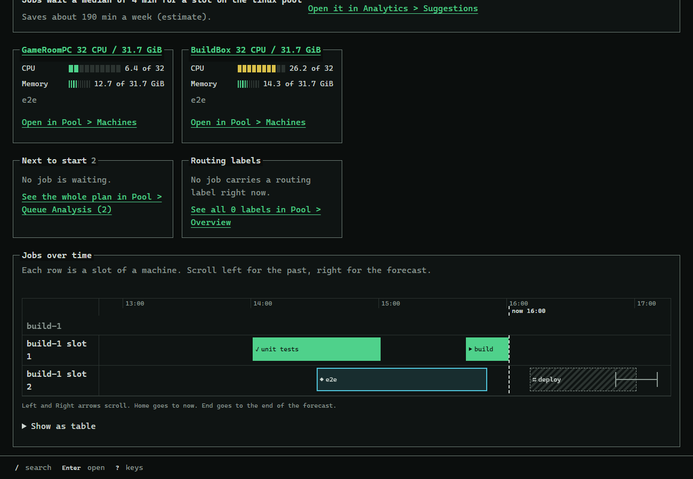
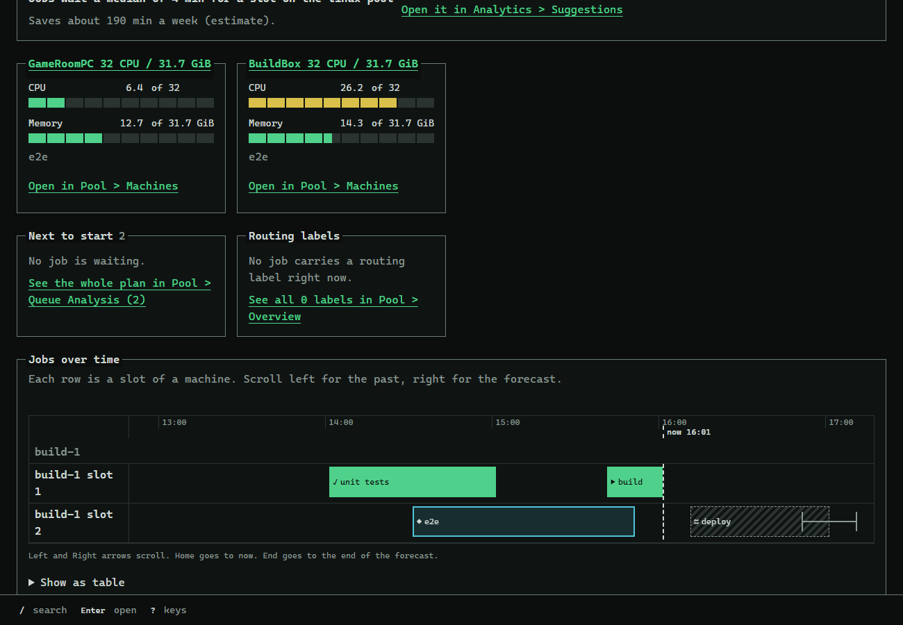
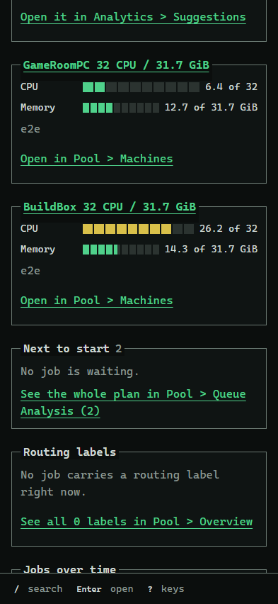
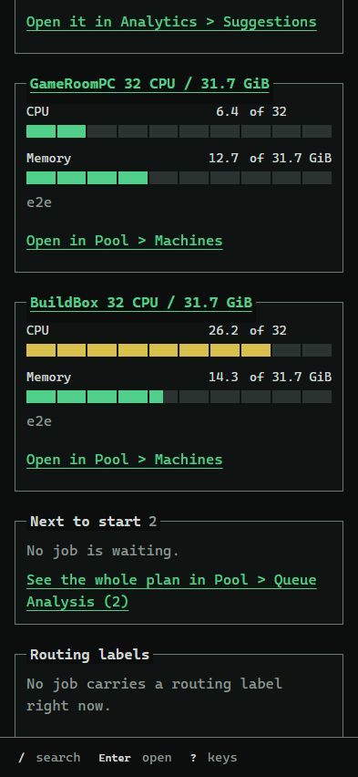
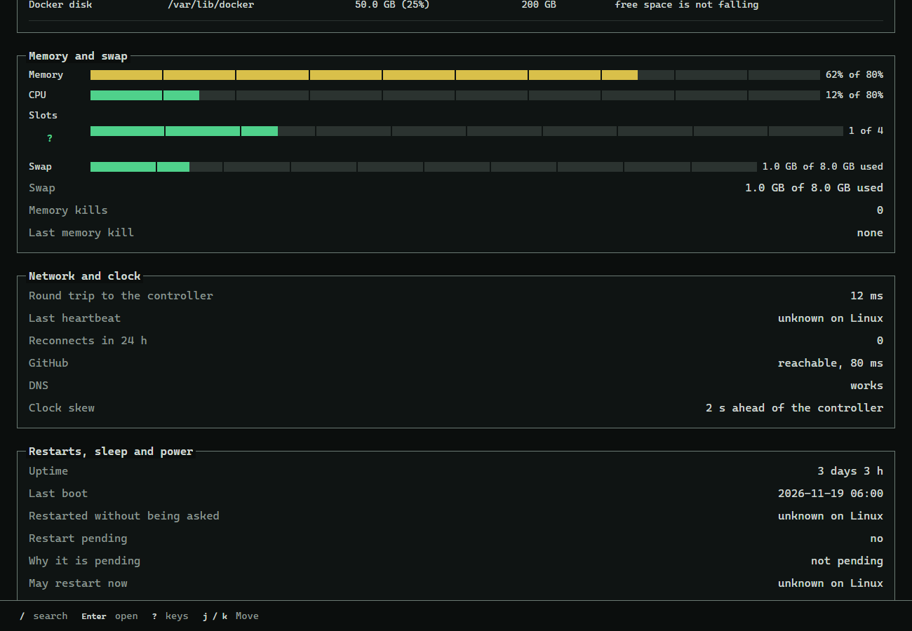
Machines, machine page: Memory and swap: before, 1300 px">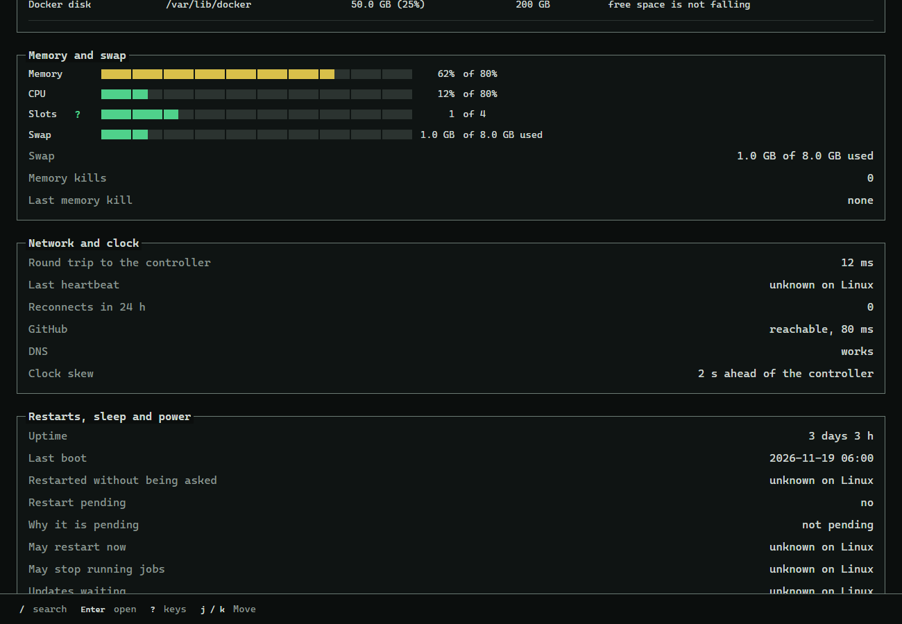
Machines, machine page: Memory and swap: after, 1300 px (same type size, only the meter change)">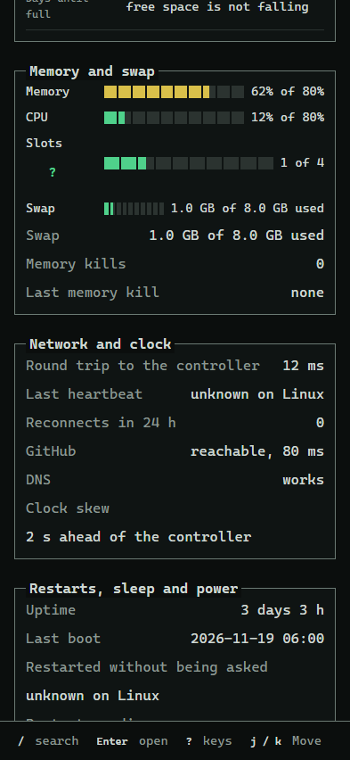
Machines, machine page: Memory and swap: before, 393 px">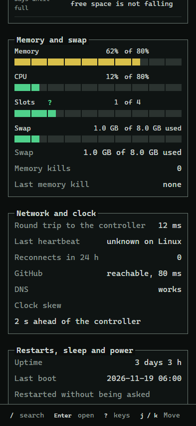
Machines, machine page: Memory and swap: after, 393 px (same type size, only the meter change)">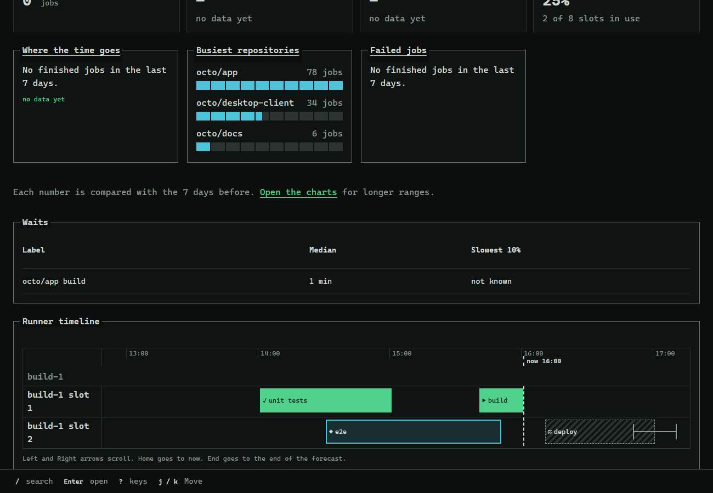
Insights: Busiest repositories: before, 1300 px">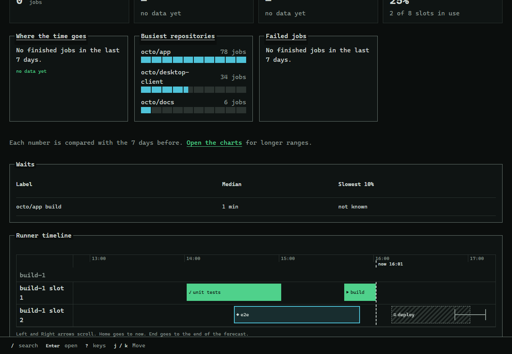
Insights: Busiest repositories: after, 1300 px (same type size, only the meter change)">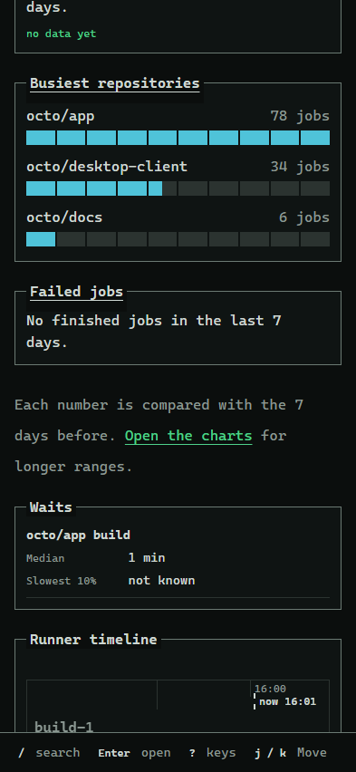
Insights: Busiest repositories: before, 393 px">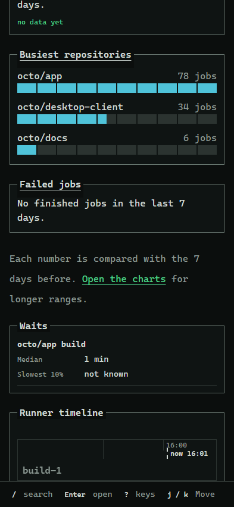
Insights: Busiest repositories: after, 393 px (same type size, only the meter change)">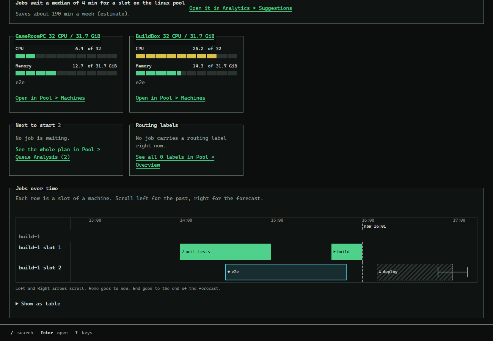
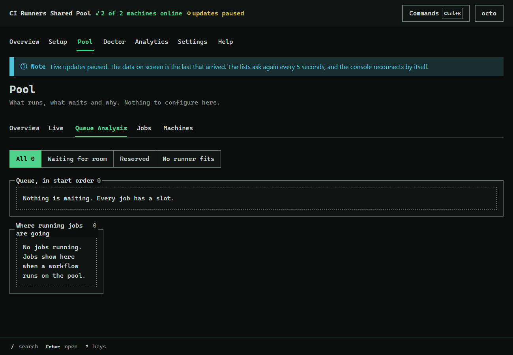
Queue Analysis: current type size (factor 1), 1300 px">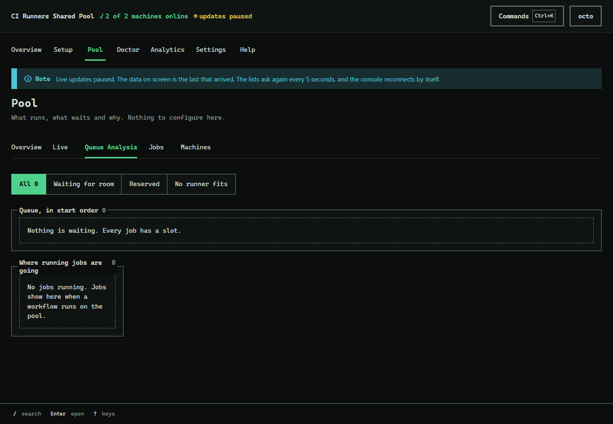
Queue Analysis: type scale 0.85, 1300 px">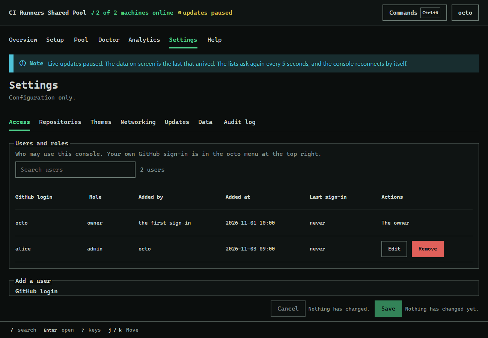
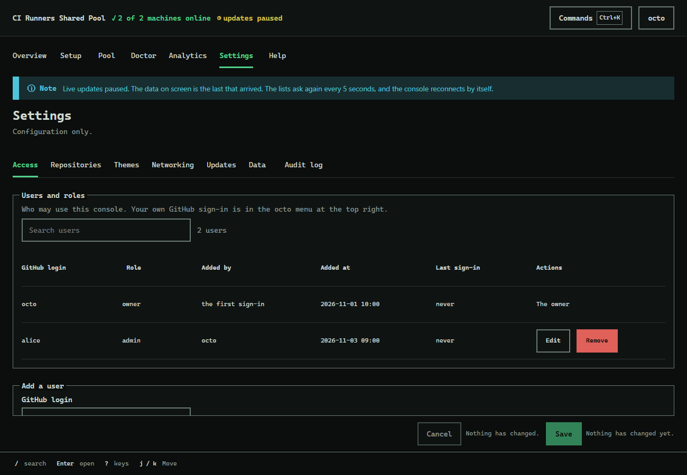